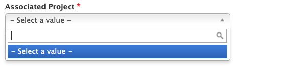

Project Supporting Material
What Is a Project Supporting Material
Content that provides context or additional information about a Project (see above). This may include instructions for use of the Project’s outputs, links to surveys, links to purchase options, or information about supporting the project.
Who Can Add Project Supporting Materials
Members of Content Team groups that contain the project.
Instructions for Project Supporting Materials
To create a Project Supporting Material, go to your My Groups page and select the Content Team group that contains the Project the material is related to. Then, click the "Create Project Supporting Material" button at the top of the page.
The edit screen for a project supporting material has the following fields:
-
Associated Project (required): the project that the material supports. This is necessary because a content team may contain more than one Project.

-
Type (required): the type of material. This is used for informational or organizational purposes only, and isn’t seen by the public.
- Content: the main text that shows on the Material’s page
- Page Sections: additional content that shows on the Material’s page (see Page Sections for more information). The same types of page sections are available here as on main project pages.
- Teaser settings: thumbnail and short description that display in the material's teaser.
Where and How Project Supporting Materials Display
All supporting materials tagged with a Project will show up in a sidebar on that Project’s page.
By default, the newest materials show up at the bottom of the sidebar. If you are a member of the group that contains the Project, you can customize the order of materials in the sidebar by clicking the “Reorder Pages” button at the bottom of the sidebar. This will take you to a page where you can drag and drop the materials into the order that you want. To nest one page under another, drag the nested page beneath it’s parent and then to the right. To un-nest a page, drag it back to the left. When you are done, click the “Save” button.